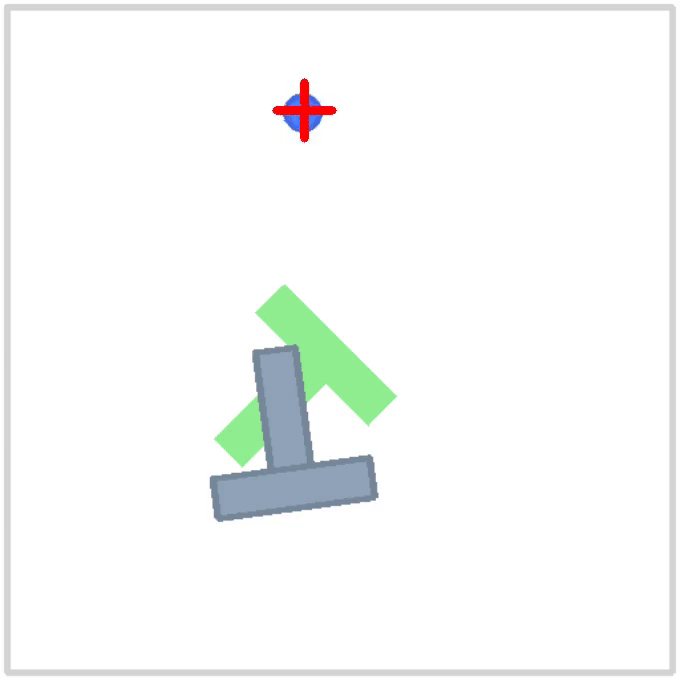
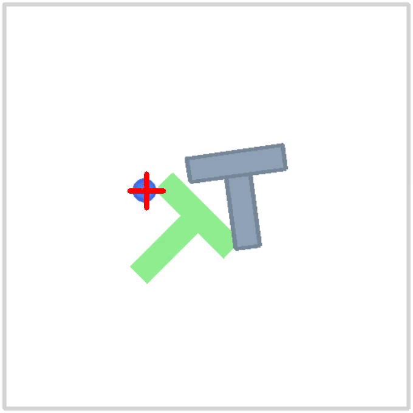
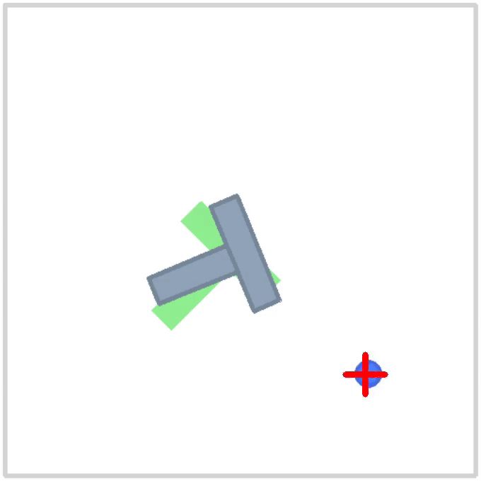
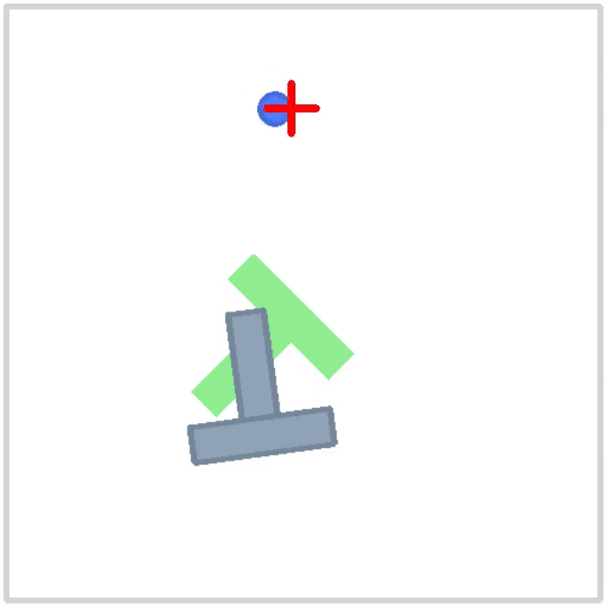
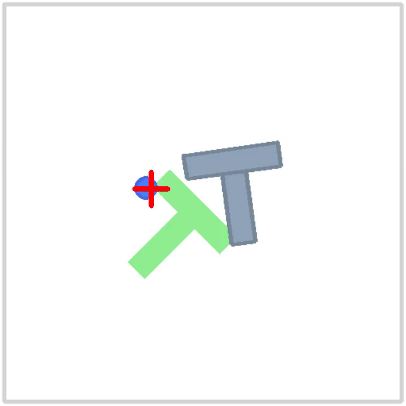
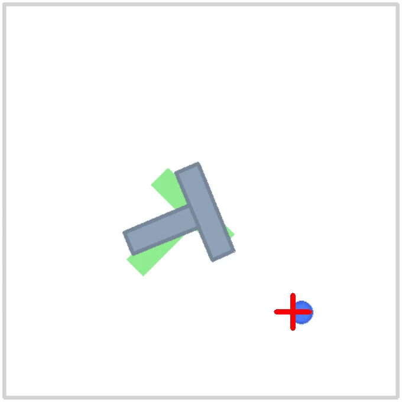

Latent-Action Diffusion for Efficient Robot Policy Inference
We train a diffusion model on latent-action using a Beta-VAE for
efficient robot policy inference.
Abstract
Diffusion Policies have shown strong performance in robotic
manipulation tasks but are often computationally expensive at
inference time due to high-dimensional action spaces. For this reason,
researchers often prefer flow-matching techniques which are known to
perform significantly faster in real life control tasks. This project
leverages latent diffusion - popular in the field of image generation
due to its less demanding compute - in the action space to reduce both
training and inference time complexity. We use β-Variational
Autoencoders (β-VAEs) to compress robot action vectors into
low-dimensional latent representations, enabling faster and more
efficient policy inference. We trained a β-VAE on the pushT dataset,
achieving high reconstruction fidelity with extendability into other
datasets too. Quantitative results show that the model preserved
semantic action structure while significantly reducing dimensionality,
as evidenced by low reconstruction error and balanced KL divergence
across latent variables. Then, the pretrained β-VAE will be frozen. We
replace the standard action space in DP with an encoded one by the
VAE, with which the diffusion model will operate over the latent
space, and eventually decode actions for control. This work serves as
an ablation study into the practices and necessities for integrating
latent-space diffusion policies and offers a promising direction to
reducing computational overhead in real-time robotic control.
Diffusion Policy Rollouts
Diffusion policy original
Diffusion policy with Beta-VAE
Beta-VAE Reconstruction
We trained a Beta-VAE to Reconstruct actions on the pushT dataset. We
observed good reconstruction quality across a variety of episodes. In
isolation, the Beta-VAE was able to achieve excellent results.
Top: Original action. Bottom: Reconstructed action
Episode 0
Episode 4
Episode 8





